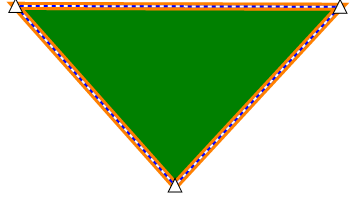

Tutorials
Creating custom annotations
WebViewer allows you to create your own annotations that can be customized in several different ways. You can change the appearance and behaviors of the annotation, selection box and control handles. As an example of this we're going to walk through the steps to create a custom triangle annotation.
First let's create a basic triangle annotation "class".
var TriangleAnnotation = function() {
Annotations.MarkupAnnotation.call(this);
this.Subject = 'Triangle';
};
TriangleAnnotation.prototype = $.extend(new Annotations.MarkupAnnotation(), {
elementName: 'triangle'
});
We'll have it inherit from Annotations.MarkupAnnotation and set the elementName to triangle. The elementName is what's used for the annotation's xml element in the XFDF.
Let's override the draw function now. The draw function takes a canvas context and is called whenever the annotation should be drawn.
var TriangleAnnotation = function() {
Annotations.MarkupAnnotation.call(this);
this.Subject = 'Triangle';
};
TriangleAnnotation.prototype = $.extend(new Annotations.MarkupAnnotation(), {
elementName: 'triangle',
draw: function(ctx) {
// the setStyles function is a function on markup annotations that sets up
// certain properties for us on the canvas for the annotation's stroke thickness.
this.setStyles(ctx);
// first we need to translate to the annotation's x/y coordinates so that it's
// drawn in the correct location
ctx.translate(this.X, this.Y);
ctx.beginPath();
ctx.moveTo(this.Width / 2, 0);
ctx.lineTo(this.Width, this.Height);
ctx.lineTo(0, this.Height);
ctx.closePath();
ctx.fill();
ctx.stroke();
}
});
Adding the annotation to a document
To allow a user to actually add the annotation to a document we'll need to create a tool. Our triangle just depends on two mouse points so we can inherit from the GenericAnnotationCreateTool.
var TriangleCreateTool = function(docViewer) {
// TriangleAnnotation is the constructor function for our annotation we defined previously
Tools.GenericAnnotationCreateTool.call(this, docViewer, TriangleAnnotation);
};
TriangleCreateTool.prototype = new Tools.GenericAnnotationCreateTool();
With our tool created we can add a button to the UI so that it can be switched to.
$(document).on("documentLoaded", function(event) {
var triangleTool = 'AnnotationCreateTriangle';
// add a button to the overflow tools container which can be accessed from
// the downward pointing arrow to the right of the annotation tools
$('#overflowToolsContainer').prepend(
'<span data-toolmode="' + triangleTool + '" class="annotTool glyphicons" title="Triangle">' +
'<img src="triangle-tool.png"/></span>'
);
var am = readerControl.getDocumentViewer().getAnnotationManager();
// register the annotation type so that it can be saved to XFDF files
am.registerAnnotationType("triangle", TriangleAnnotation);
readerControl.toolModeMap[triangleTool] = new TriangleCreateTool(readerControl.docViewer);
// registering the tool allows the triangle to have its properties remembered
window.ControlUtils.userPreferences.registerTool(
readerControl.toolModeMap[triangleTool], 'triangle', TriangleAnnotation
);
// set the tool mode to our tool so that we can start using it right away
readerControl.setToolMode(triangleTool);
});
If you've added all this code to a config file and loaded it into WebViewer then you should be able to create triangle annotations!
After creating some triangles you might notice that the selection box is a rectangle and has eight control handles. This isn't terrible but we could probably make it better by having a control handle for each corner and drawing the selection box around the edge of the annotation.
First let's change the control points so that there is one for each vertex. To do this we'll add an array of vertices on the annotation and then define a new selection model and control handles to resize the annotation.
We'll add the array to the annotation constructor:
var TriangleAnnotation = function() {
Annotations.MarkupAnnotation.call(this);
this.Subject = "Triangle";
this.vertices = [];
var numVertices = 3;
for (var i = 0; i < numVertices; ++i) {
this.vertices.push({
x: 0,
y: 0
});
}
};
Then for the tool we'll override the mouseMove function to set the vertices:
TriangleCreateTool.prototype.mouseMove = function(e) {
// call the parent mouseMove first
Tools.GenericAnnotationCreateTool.prototype.mouseMove.call(this, e);
if (this.annotation) {
this.annotation.vertices[0].x = this.annotation.X + this.annotation.Width / 2;
this.annotation.vertices[0].y = this.annotation.Y;
this.annotation.vertices[1].x = this.annotation.X + this.annotation.Width;
this.annotation.vertices[1].y = this.annotation.Y + this.annotation.Height;
this.annotation.vertices[2].x = this.annotation.X;
this.annotation.vertices[2].y = this.annotation.Y + this.annotation.Height;
// update the annotation appearance
this.docViewer.getAnnotationManager().redrawAnnotation(this.annotation);
}
};
Then we'll update the draw function on the annotation to use the vertices for drawing:
draw: function(ctx) {
this.setStyles(ctx);
ctx.beginPath();
ctx.moveTo(this.vertices[0].x, this.vertices[0].y);
ctx.lineTo(this.vertices[1].x, this.vertices[1].y);
ctx.lineTo(this.vertices[2].x, this.vertices[2].y);
ctx.closePath();
ctx.fill();
ctx.stroke();
}
At this point the drawing of the annotation should look the same as before, however you won't be able to move the annotation. To fix this let's create the custom selection model and control handles.
var TriangleControlHandle = function(annotation, index) {
this.annotation = annotation;
// set the index of this control handle so that we know which vertex is corresponds to
this.index = index;
};
TriangleControlHandle.prototype = {
// returns a rect that should represent the control handle's position and size
getDimensions: function(annotation, selectionBox, zoom) {
var x = annotation.vertices[this.index].x;
var y = annotation.vertices[this.index].y;
var width = Annotations.ControlHandle.handleWidth / zoom;
var height = Annotations.ControlHandle.handleHeight / zoom;
// adjust for the control handle's own width and height
x = x - width * 0.5;
y = y - height * 0.5;
return new Annotations.Rect(x, y, x + width, y + height);
},
// this function is called when the control handle is dragged
move: function(annotation, deltaX, deltaY, fromPoint, toPoint) {
annotation.vertices[this.index].x += deltaX;
annotation.vertices[this.index].y += deltaY;
// recalculate the X, Y, width and height of the annotation
var minX = Number.MAX_VALUE;
var maxX = -Number.MAX_VALUE;
var minY = Number.MAX_VALUE;
var maxY = -Number.MAX_VALUE;
for (var i = 0; i < annotation.vertices.length; ++i) {
var vertex = annotation.vertices[i];
minX = Math.min(minX, vertex.x);
maxX = Math.max(maxX, vertex.x);
minY = Math.min(minY, vertex.y);
maxY = Math.max(maxY, vertex.y);
}
var rect = new Annotations.Rect(minX, minY, maxX, maxY);
annotation.setRect(rect);
// return true if redraw is needed
return true;
}
};
TriangleControlHandle.prototype = $.extend(true, new Annotations.ControlHandle(), TriangleControlHandle.prototype);
// selection model creates the necessary control handles
var TriangleSelectionModel = function(annotation, canModify) {
Annotations.SelectionModel.call(this, annotation, canModify);
if (canModify) {
var controlHandles = this.getControlHandles();
// pass the vertex index to each control handle
controlHandles.push(new TriangleControlHandle(annotation, 0));
controlHandles.push(new TriangleControlHandle(annotation, 1));
controlHandles.push(new TriangleControlHandle(annotation, 2));
}
};
TriangleSelectionModel.prototype = $.extend(true, new Annotations.SelectionModel(), TriangleSelectionModel.prototype);
TriangleAnnotation.prototype = $.extend(new Annotations.MarkupAnnotation(), {
elementName: 'triangle',
// need to add selection model property here
selectionModel: TriangleSelectionModel,
// rest of triangle annotation code
...
...
Now there should be a control handle for each point of the triangle and if you drag them around you'll move that vertex of the triangle! However you may notice that if you try to drag and move the annotation it won't work. To fix this let's override the resize function on the annotation.
// add this to the TriangleAnnotation prototype
resize: function(rect) {
// this function is only called when the annotation is dragged
// since we handle the case where the control handles move
var annotRect = this.getRect();
var deltaX = rect.x1 - annotRect.x1;
var deltaY = rect.y1 - annotRect.y1;
// shift the vertices by the amount the rect has shifted
this.vertices = this.vertices.map(function(vertex) {
vertex.x += deltaX;
vertex.y += deltaY;
return vertex;
});
this.setRect(rect);
}
Let's change the selection box so that it's displayed around the sides of the triangle. We'll do this by overriding the drawSelectionOutline function on the selection model.
TriangleSelectionModel.prototype = {
drawSelectionOutline: function(ctx, annotation, zoom) {
if (typeof zoom !== 'undefined') {
ctx.lineWidth = Annotations.SelectionModel['selectionOutlineThickness'] / zoom;
} else {
ctx.lineWidth = Annotations.SelectionModel['selectionOutlineThickness'];
}
// changes the selection outline color if the user doesn't have permission to modify this annotation
if (this.canModify()) {
ctx.strokeStyle = Annotations.SelectionModel['defaultSelectionOutlineColor'].toString();
} else {
ctx.strokeStyle = Annotations.SelectionModel['defaultNoPermissionSelectionOutlineColor'].toString();
}
ctx.beginPath();
ctx.moveTo(annotation.vertices[0].x, annotation.vertices[0].y);
ctx.lineTo(annotation.vertices[1].x, annotation.vertices[1].y);
ctx.lineTo(annotation.vertices[2].x, annotation.vertices[2].y);
ctx.closePath();
ctx.stroke();
var dashUnit = Annotations.SelectionModel['selectionOutlineDashSize'] / zoom;
var sequence = [dashUnit, dashUnit];
ctx.setLineDash(sequence);
ctx.strokeStyle = 'rgb(255, 255, 255)';
ctx.stroke();
},
testSelection: function(annotation, x, y) {
// the canvas visibility test will only select the annotation
// if a user clicks exactly on it as opposed to the rectangular bounding box
return Annotations.SelectionAlgorithm.canvasVisibilityTest(annotation, x, y);
}
};
For fun let's also override the control handle's draw function to make them look like triangles as well.
draw: function(ctx, annotation, selectionBox, zoom) {
var dim = this.getDimensions(annotation, selectionBox, zoom);
ctx.beginPath();
ctx.moveTo(dim.x1 + (dim.getWidth() / 2), dim.y1);
ctx.lineTo(dim.x1 + dim.getWidth(), dim.y1 + dim.getHeight());
ctx.lineTo(dim.x1, dim.y1 + dim.getHeight());
ctx.closePath();
ctx.stroke();
ctx.fill();
}
If everything went well you should have triangle annotations that look something like this: 
If you tried to save and load this annotation you would notice that it isn't able to be reloaded. This is because WebViewer doesn't know that it needs to save the vertices array. To do this we can override the serialize and deserialize functions which are called when the annotation should be saved or loaded respectively.
// add these to the TriangleAnnotation prototype
serialize: function(element, pageMatrix) {
var el = Annotations.MarkupAnnotation.prototype.serialize.call(this, element, pageMatrix);
el.setAttribute('vertices', Annotations.XfdfUtils.serializePointArray(this.vertices, pageMatrix));
return el;
},
deserialize: function(element, pageMatrix) {
Annotations.MarkupAnnotation.prototype.deserialize.call(this, element, pageMatrix);
this.vertices = Annotations.XfdfUtils.deserializePointArray(element.getAttribute('vertices'), pageMatrix);
}
Now you can save and load the triangles in WebViewer! You can find the final config file with all of the code from this tutorial in the custom-annotations folder.